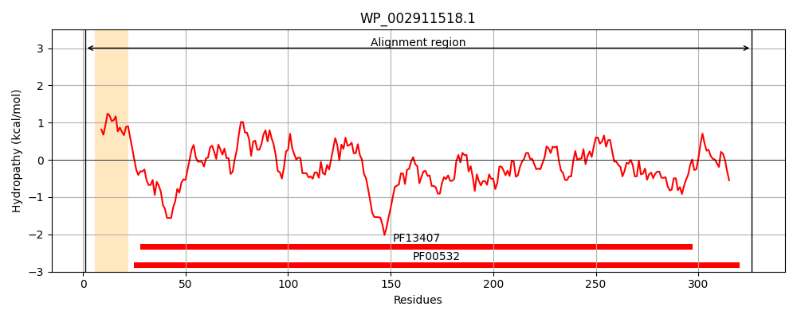
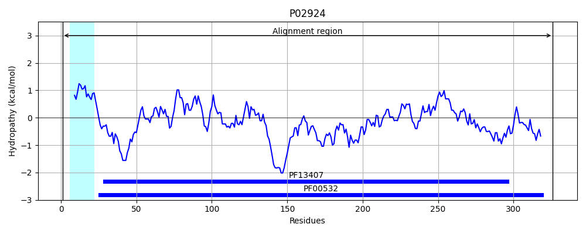
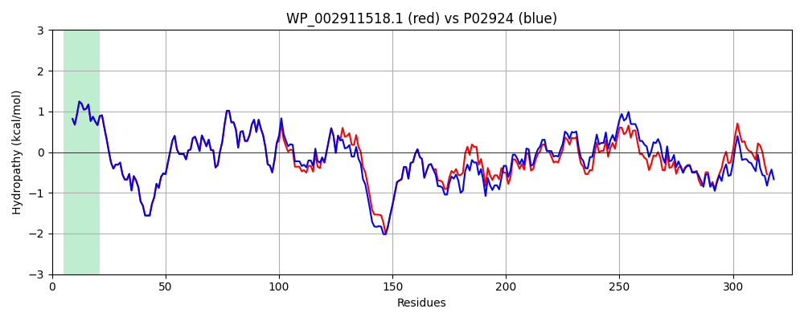

Hit Accession: P02924
Hit TCID: 3.A.1.2.2
Hit Description: gnl|BL_ORD_ID|8233 gnl|TC-DB|P02924|3.A.1.2.2 L-arabinose-binding periplasmic protein precursor (ABP) - Escherichia coli.
Mach Len: 326
e:0.000000
Query TMS Count : 1
Hit TMS Count: 1
TMS-Overlap Score: 0.850000
Predicted Substrates:CHEBI:22599;arabinose
BLAST Alignment:
Score: 1561 , Bit scores: 605 bits, E-value: 0.0e+00, Alignment length: 326, Percentage identity: 92
Query: 1 MHKFTKALAAIGLAAVMSQSAMAENLKLGFLVKQPEEPWFQTEWKFADKAGKDLGFDVIKIAVPDGEKTLNAIDSLAASGAKGFVICTPDPKLGSAIVAKARGYDMKVITVDDQFVNAKGKPMESVPLVMMAASEIGARQGQELYKEMQKRGWDVKDTAVMAITADELDTARRRTTGSIDALKAAGFPDAQIYRVPTKSNDIPGAFDAGNSMLVQHPQVKHWLIVGMNDNTVLGGVRATEGQGFKAPDVIGIGINGVDAVNELSKAQPTGFYGSLLPSPDIHGYKTSEMLYNWVTKGVEPPKFTAVTDVVLITRDNFKEELAKKGL 326
MHKFTKALAAIGLAAVMSQSAMAENLKLGFLVKQPEEPWFQTEWKFADKAGKDLGF+VIKIAVPDGEKTLNAIDSLAASGAKGFVICTPDPKLGSAIVAKARGYDMKVI VDDQFVNAKGKPM++VPLVMMAA++IG RQGQELYKEMQKRGWDVK++AVMAITA+ELDTARRRTTGS+DALKAAGFP+ QIY+VPTKSNDIPGAFDA NSMLVQHP+VKHWLIVGMND+TVLGGVRATEGQGFKA D+IGIGINGVDAV+ELSKAQ TGFYGSLLPSPD+HGYK+SEMLYNWV K VEPPKFT VTDVVLITRDNFKEEL KKGL
Sbjct: 1 MHKFTKALAAIGLAAVMSQSAMAENLKLGFLVKQPEEPWFQTEWKFADKAGKDLGFEVIKIAVPDGEKTLNAIDSLAASGAKGFVICTPDPKLGSAIVAKARGYDMKVIAVDDQFVNAKGKPMDTVPLVMMAATKIGERQGQELYKEMQKRGWDVKESAVMAITANELDTARRRTTGSMDALKAAGFPEKQIYQVPTKSNDIPGAFDAANSMLVQHPEVKHWLIVGMNDSTVLGGVRATEGQGFKAADIIGIGINGVDAVSELSKAQATGFYGSLLPSPDVHGYKSSEMLYNWVAKDVEPPKFTEVTDVVLITRDNFKEELEKKGL 326 | Protein Hydropathy Plots: |
|---|
|  |  |
Pairwise Alignment-Hydropathy Plot:
|
|---|
|  |